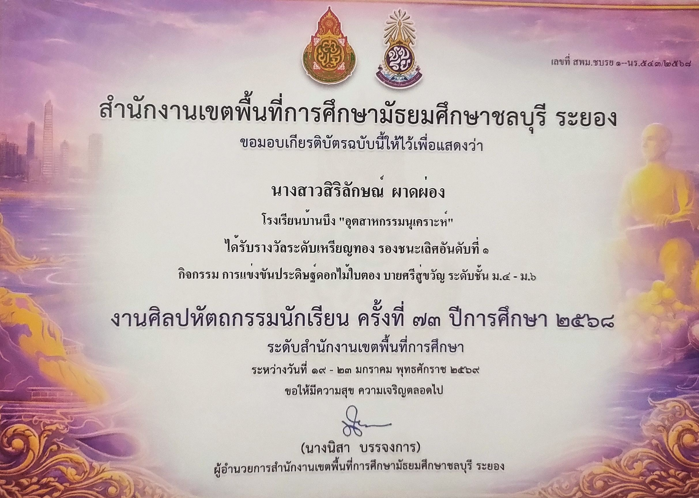
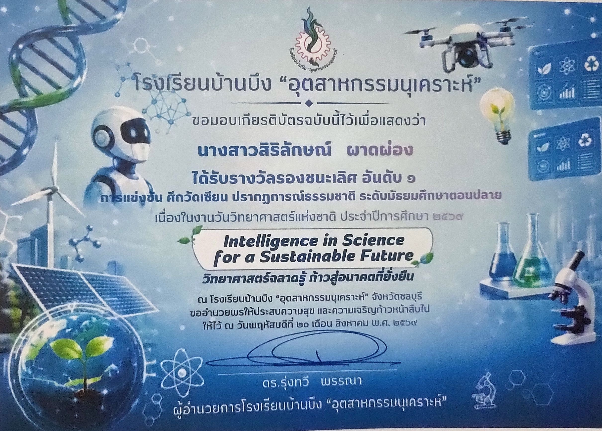
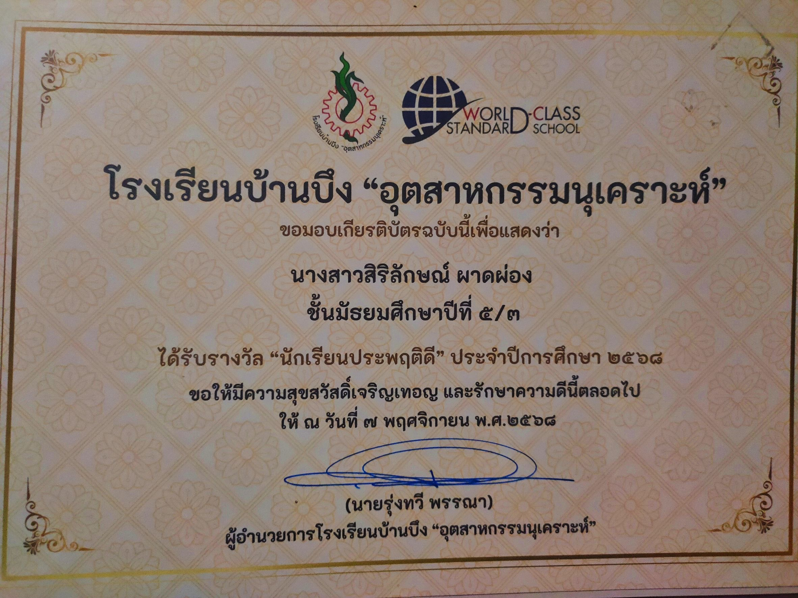
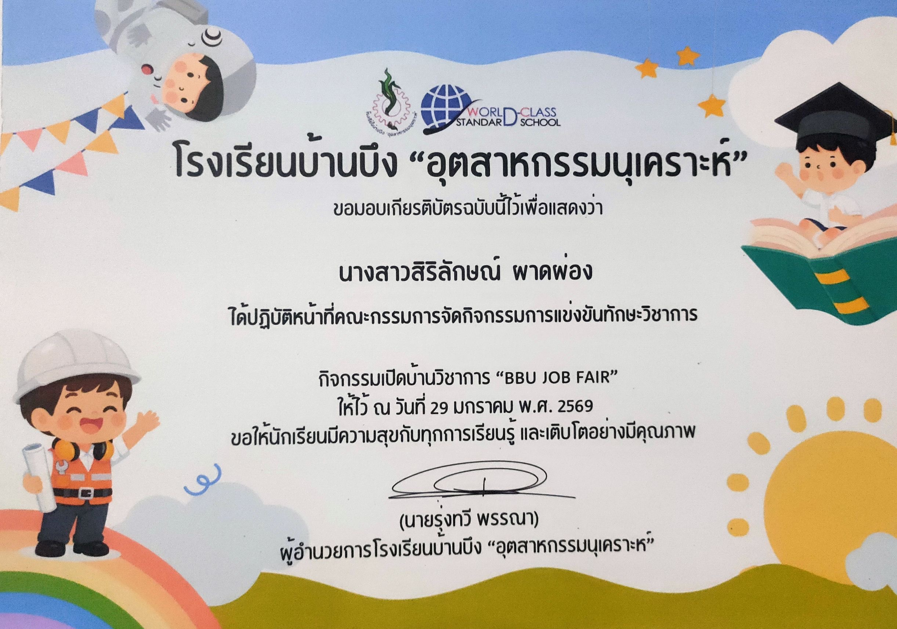

✦ ˚ ✧ ⋆ ✦ ˚ ✧ ⋆ ✦
แฟ้มสะสมผลงาน
PORTFOLIO
นางสาว สิริลักษณ์ ผาดผ่อง
นักเรียนชั้นมัธยมศึกษาปีที่ 6
โรงเรียนบ้านบึง “อุตสาหกรรมนุเคราะห์”
เริ่มต้นชมผลงาน ✨
PORTFOLIO
นางสาว สิริลักษณ์ ผาดผ่อง
นักเรียนชั้นมัธยมศึกษาปีที่ 6
โรงเรียนบ้านบึง “อุตสาหกรรมนุเคราะห์”
เริ่มต้นชมผลงาน ✨ชื่อ - นามสกุล : นางสาว สิริลักษณ์ ผาดผ่อง
ชื่อเล่น : ปอ
ระดับชั้น : มัธยมศึกษาปีที่ 6
แผนการเรียน : เตรียมวิศวกรรมศาสตร์
สนใจวิชาวิทยาศาสตร์ ชอบการทดลอง การค้นคว้า และการเรียนรู้สิ่งใหม่ ๆ
มีความตั้งใจศึกษาต่อในสายครู เพื่อถ่ายทอดความรู้ให้กับผู้อื่น
✦ การคิดวิเคราะห์
✦ การทำงานเป็นทีม
✦ การนำเสนอผลงาน
✦ การใช้เทคโนโลยี
ต้องการศึกษาต่อคณะศึกษาศาสตร์ สาขาวิชาวิทยาศาสตร์ทั่วไป และประกอบอาชีพครูวิทยาศาสตร์
มหาวิทยาลัยที่ข้าพเจ้ามีความตั้งใจอยากเข้าศึกษาต่อ คือ มหาวิทยาลัยเกษตรศาสตร์ วิทยาเขตบางเขน
คณะที่สนใจ : คณะศึกษาศาสตร์
สาขาที่สนใจ : สาขาวิชาวิทยาศาสตร์ทั่วไป
ข้าพเจ้ามีความสนใจในวิชาวิทยาศาสตร์ และมีความฝันอยากเป็นครูวิทยาศาสตร์ เพื่อถ่ายทอดความรู้และสร้างแรงบันดาลใจ ให้แก่นักเรียนในอนาคต
ผลงานที่สะท้อนถึงความรู้ ความสามารถ ความประพฤติ และการมีจิตสาธารณะ




ขอบคุณสำหรับเวลาและความสนใจ ในแฟ้มสะสมผลงานของข้าพเจ้า
หวังว่าแฟ้มสะสมผลงานฉบับนี้ จะสะท้อนถึงความตั้งใจ ความสามารถ และความมุ่งมั่นของข้าพเจ้าได้เป็นอย่างดี